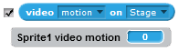

Detecta quanto de movimento ou direção há na imagem do vídeo atualmente
Como usar:
- É necessário webcam.
- Use
 para verificar a quantidade de movimento no vídeo sob o ator atual.
para verificar a quantidade de movimento no vídeo sob o ator atual. - Use
 para verificar a quantidade de movimento na imagem inteira do vídeo.
para verificar a quantidade de movimento na imagem inteira do vídeo. - Use para verificar a direção do movimento no vídeo sob o ator atual.
- Use para verificar a direção do movimento na imagem do vídeo.
Exemplo de Script:

Solução de problemas:
- Verifique se a câmera está ligada.
- Ajuste o % de movimento ou a direção para que responda mais ou menos.
- Clique na caixa de seleção para ver o valor atual:
